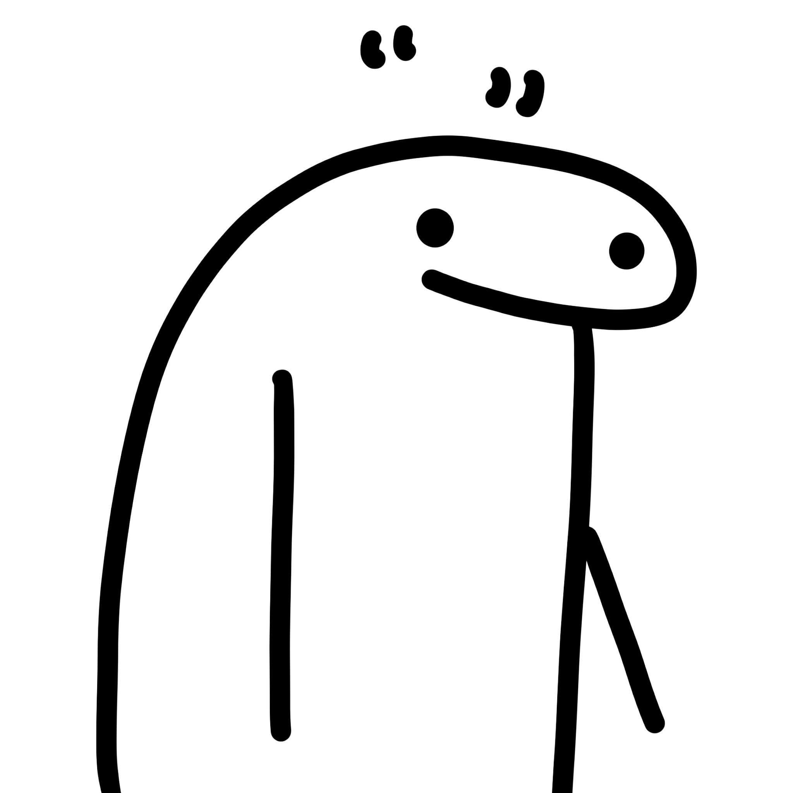

The Saboteur, The Joykiller
The first and the most the completely most uninteresting is the question mark.
Connected with writing it is completely entirely completely uninteresting.
All knows when a question is a question as it is written in writing.
Therefore I ask you therefore wherefore should one use the question mark.
Beside it does not in its form go with ordinary printing and so it pleases neither the eye nor the ear.
A question is a question.
Anybody can know that a question is a question.
I always found it positively revolting
Exclamation marks have the same difficulty and also quotation marks,
They are unnecessary, they are ugly, they spoil the line of the writing or the printing and anyway what is the use.
When I first began writing I found it simply impossible to use question marks and quotation marks and exclamation points.
Perhaps some day they will see it some other way but not at any rate anybody can and does see it that way.
Find More~